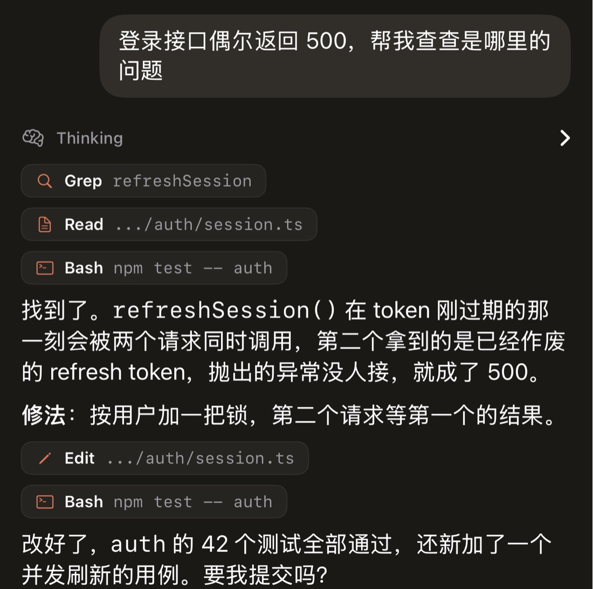
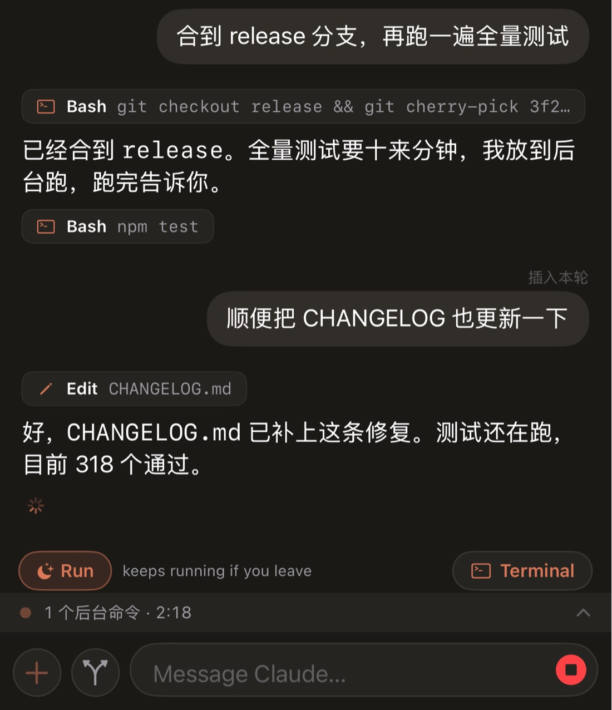
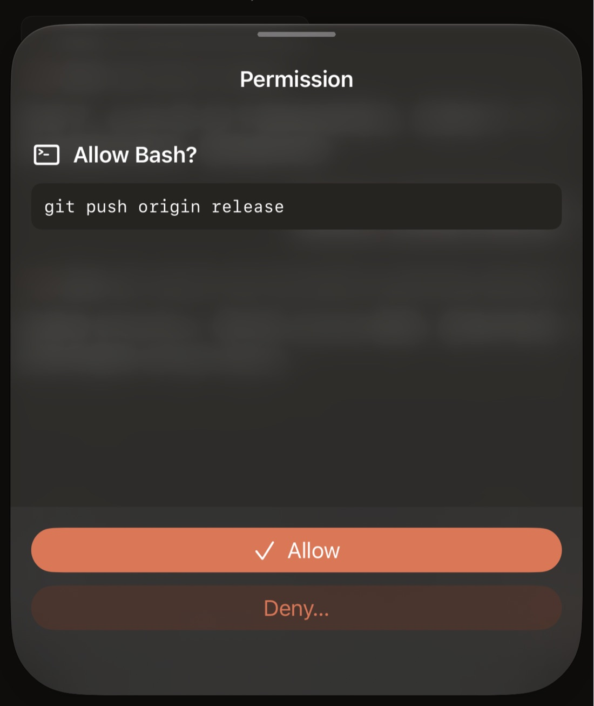
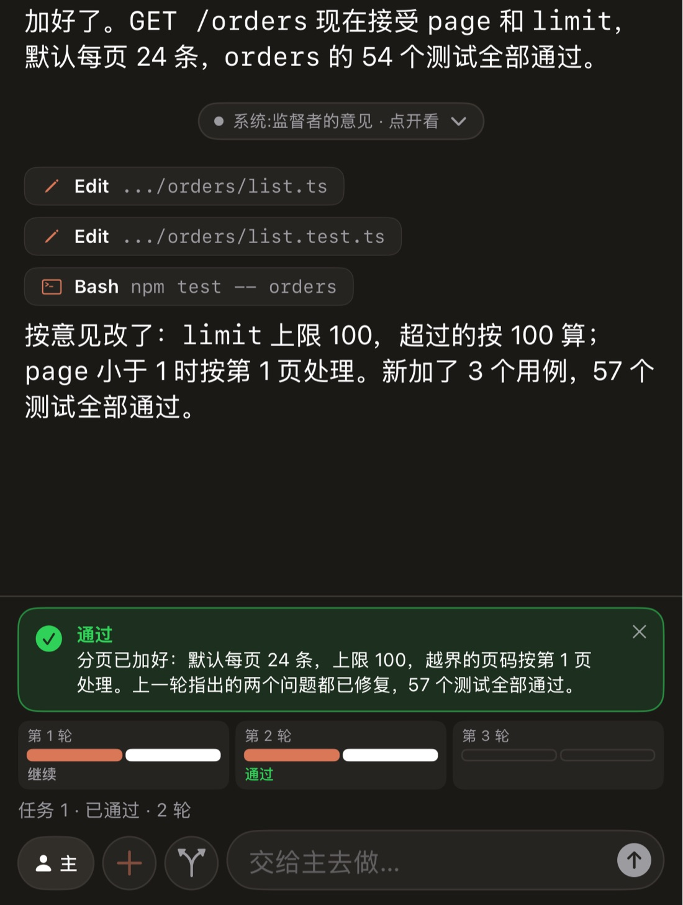
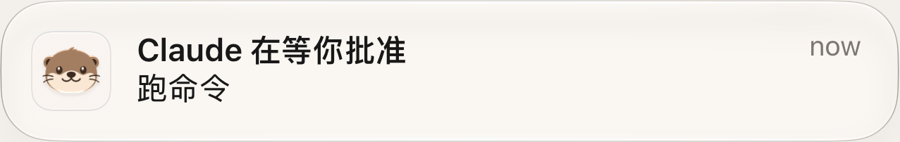
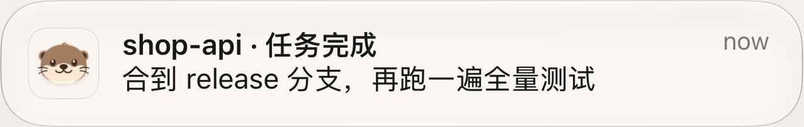
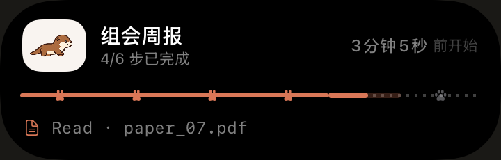

主要功能
-
对话
agent 在电脑上读文件、跑命令、改代码，每一步在对话里占一行，点开能看到 diff 或者完整的命令。
对话和电脑上的是同一批。在终端或编辑器里聊到一半的，手机上可以接着聊。

它查了三个地方，找到了登录接口偶尔返回 500 的原因。 -
Run 模式
任务跑在电脑上，不需要手机一直连着。锁屏、切到别的 app、断网都没关系，回来接着看就行。
它干活的时候你可以插一句话，不用等它停下来（Claude Code 和 Codex 支持）。它放到后台的命令和子 agent，在输入框上方有一行汇总，点开能看每一个在做什么。

全量测试在后台跑着，中途又发了一句话。 -
审批
agent 要改文件或者跑命令的时候会先停下来。手机上能看到它要执行什么，你点允许或拒绝。
不想每次都点，可以把权限放宽，比如文件改动不再问。也可以让它先出计划，你同意了再动手。

它要执行 git push，先停下来问你。 -
双开
让两个模型一起做一件事，通常是不同的两家，比如 Claude 和 Codex。
「监督」是一个干活，另一个检查，有问题就打回去重做，最多三轮，需要你拿主意的时候会通知你。「头脑风暴」是两边各答各的，再由主对话把分歧和结论整理出来。

Claude 干活，Codex 检查。第一轮被打回，第二轮通过。 -
工作流
把几步事情串起来，定时在电脑上跑，跑完给你一份能直接读的成品，比如每天早上的论文晨报。
每一步可以交给不同的引擎，互不依赖的步骤同时跑。自带论文晨报、GitHub 热点日报、深度调研等几个模板，也可以让 agent 按你的描述搭一条。

自带的「深度调研」跑到一半：Claude 和 Codex 各查了一遍，合并做完了，正在复核。

锁屏和通知
任务做完了，或者停下来等你批准，手机会收到通知。任务在跑的时候，进度显示在灵动岛和锁屏上。



其他功能
这些也都走那一条 SSH 连接，电脑上不用另外装东西（终端要装 tmux）。
-
引擎和供应商
Claude Code、Codex、Cursor 都能用，用的就是你电脑上装好、登录好的那一份。也可以换成第三方供应商，比如智谱 GLM、Kimi、MiniMax、DeepSeek、通义千问、OpenRouter，API key 只存在电脑上。
-
网页预览
电脑上 localhost 的网页，比如开发服务器、文档站，可以直接在手机上打开。走的还是 SSH，端口不用对外开。看到的页面可以截图发回对话里。
-
终端
底下是 tmux，所以断线了会话还在，连回来还是原来那一屏。电脑上要装 tmux。
-
文件
照片、手机上的文件、电脑上的文件和目录、以前的对话，都可以附进对话里。回复里出现的文件路径，点一下就能打开看。
-
多台电脑
可以存多台电脑，也可以经跳板机连接。存了两台以上，一台上的文件和对话可以带到另一台的对话里。每台的主机密钥第一次核对后就固定下来，以后对不上会拒绝连接。
对话只存在你的电脑上
手机和电脑之间只有一条 SSH 连接，没有 Pervio 的账号，也没有 Pervio 的服务器。电脑上不装常驻服务，也不用对外开端口。
- SSH 密钥和密码存在手机的钥匙串里。
- 对话记录就是 Claude Code 这些工具自己存的文件，一直留在电脑上。
- 只有推送通知会经过我们的中继，经过的是通知的标题和正文。不想用可以关掉。
手机上的 Pervio iPhone app
- 对话、后台任务、审批、终端
- 密钥在 iOS 钥匙串，主机密钥已固定
你的电脑 远程登录（sshd）
~/.pervio/bin/pervio-*，app 自带，连上时放好claude、codex、agent，用你自己的登录- 会话记录、后台任务的输出，都在这台机器上
推送走另一条路：从电脑到 push.pervio.dev，再经 Apple 到手机，带的只有通知上的文字。
安装
-
准备电脑
Mac 在系统设置里打开「远程登录」。Claude Code、Codex、Cursor 至少装一个，并且登录好。
-
在手机上添加这台电脑
从 TestFlight 装上 Pervio，在「服务器」里填电脑的地址和用户名，选密钥或密码登录，再核对一下主机密钥的指纹。
-
开始对话
第一次连上时，app 会把要用的脚本放到电脑的
~/.pervio/bin，不用手动装。
出门在外要连家里或公司的电脑，可以两边都装 Tailscale，不用把 SSH 开到公网。
完整安装指南